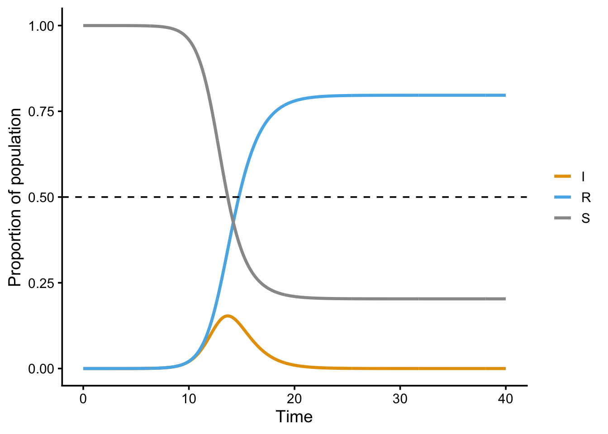
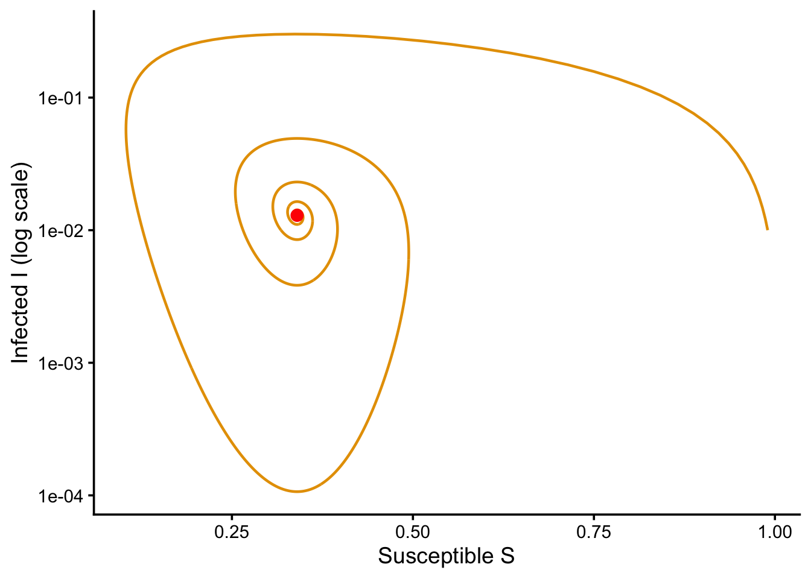

library(deSolve)
library(ggplot2)
library(tidyr)
theme_set(theme_classic(base_size = 14))
pal <- c(S = "#999999", I = "#E69F00", R = "#56B4E9")T1 — SIR basics
Day 1 · compartment models
The model
We track the proportions of susceptible, infected and recovered individuals:
\[ \frac{dS}{dt} = -\beta S I, \qquad \frac{dI}{dt} = \beta S I - \gamma I, \qquad \frac{dR}{dt} = \gamma I . \]
\(\beta\) is the transmission rate and \(\gamma\) the recovery rate, so the mean infectious period is \(1/\gamma\).
sir <- function(t, state, p) {
with(as.list(c(state, p)), {
dS <- -beta * S * I
dI <- beta * S * I - gamma * I
dR <- gamma * I
list(c(dS, dI, dR))
})
}
init <- c(S = 1 - 1e-6, I = 1e-6, R = 0)
pars <- c(beta = 2, gamma = 1) # R0 = 2
times <- seq(0, 40, by = 0.05)
out <- as.data.frame(ode(init, times, sir, pars))R0 <- pars["beta"] / pars["gamma"]
long <- pivot_longer(out, -time, names_to = "compartment", values_to = "proportion")
ggplot(long, aes(time, proportion, colour = compartment)) +
geom_line(linewidth = 1.2) +
geom_hline(yintercept = 1 / R0, linetype = "dashed") +
scale_colour_manual(values = pal) +
labs(x = "Time", y = "Proportion of population", colour = NULL)
Two numbers you can check
Herd immunity threshold. \(dI/dt > 0\) exactly when \(S > \gamma/\beta = 1/R_0\). So the epidemic peaks when a fraction \(1 - 1/R_0\) is no longer susceptible.
c(S_at_peak = out$S[which.max(out$I)], one_over_R0 = unname(1 / R0)) S_at_peak one_over_R0
0.496625 0.500000 Final size. The fraction \(Z\) ever infected solves \(Z = 1 - e^{-R_0 Z}\).
Z <- uniroot(function(z) z - (1 - exp(-R0 * z)), c(1e-6, 1))$root
c(simulated = tail(out$R, 1), theory = Z)simulated theory
0.7968124 0.7968113 Note that \(Z > 1 - 1/R_0\): the epidemic overshoots the herd immunity threshold.
Adding births and deaths
With births and deaths at rate \(\mu\), new susceptibles keep arriving and the infection can become endemic:
\[ \frac{dS}{dt} = \mu - \beta S I - \mu S, \qquad \frac{dI}{dt} = \beta S I - (\gamma + \mu) I, \qquad \frac{dR}{dt} = \gamma I - \mu R . \]
Now \(R_0 = \beta / (\gamma + \mu)\), and the endemic equilibrium is \(S^* = 1/R_0\), \(I^* = \mu (R_0 - 1) / \beta\).
sir_demo <- function(t, state, p) {
with(as.list(c(state, p)), {
dS <- mu - beta * S * I - mu * S
dI <- beta * S * I - (gamma + mu) * I
dR <- gamma * I - mu * R
list(c(dS, dI, dR))
})
}
pars_d <- c(beta = 3, gamma = 1, mu = 0.02)
out_d <- as.data.frame(ode(c(S = 0.99, I = 0.01, R = 0), seq(0, 600, 0.1),
sir_demo, pars_d))
R0_d <- with(as.list(pars_d), beta / (gamma + mu))
eq <- with(as.list(pars_d), c(S = 1 / R0_d, I = mu * (R0_d - 1) / beta))ggplot(out_d, aes(S, I)) +
geom_path(colour = "#E69F00", linewidth = 0.8) +
annotate("point", x = eq["S"], y = eq["I"], colour = "red", size = 3) +
scale_y_log10() +
labs(x = "Susceptible S", y = "Infected I (log scale)")
Exercises
- Multiply \(\beta\) and \(\gamma\) by 2. What changes, and what doesn’t? Why?
- Find the equilibria of the model without births. Which are stable?
- Add an exposed (latent) compartment \(E\) (SEIR). Does \(R_0\) change? Does the speed of the epidemic change?
- In the model with births, how does the period of the damped oscillations depend on \(\mu\)?
Project hooks
- Treatment compartment, two risk groups, seasonal \(\beta(t)\), waning immunity, vaccination at birth. See the project menu, family A.